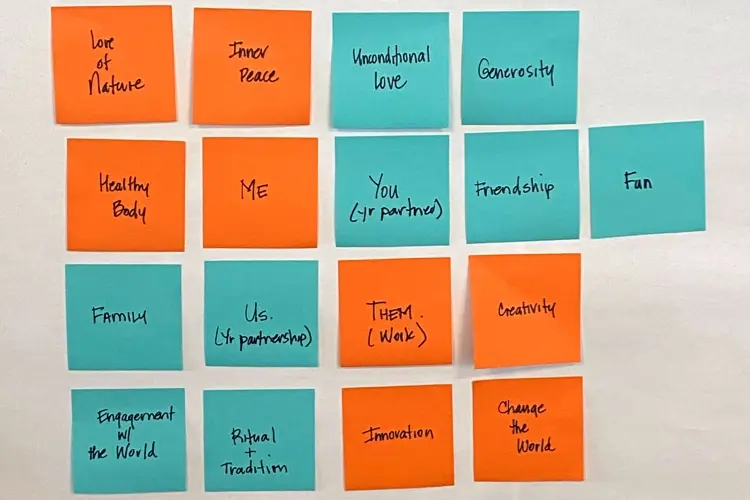
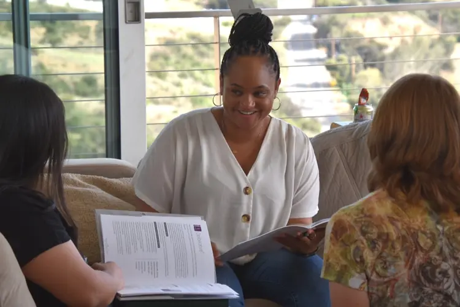
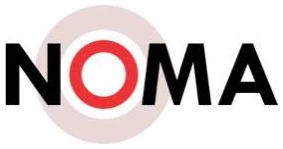

LeaderFlow Development Program

The application period for the 2026 LeaderFlow Development Program is now closed. We appreciate all who applied and look forward to announcing the next cohort. Please check back for future program updates!
Applications for the [YEAR TBC] LeaderFlow Development Program are open from [OPENING DATE TBC] until [CLOSING DATE AND TIME TBC].


Program Overview
We provide a 7-month curriculum that focuses on personal growth, increased awareness of self and others, strengthened community, and improved skills in management and leadership at no cost to participants.
We aim to assemble cohorts balanced between Architecture, Engineering, and Construction to encourage networking and relationship building across all three professions.
Employers are asked to allow participants to spend the time in the program within their continuing education time.
What is Offered?
-
Building Trust/Maintaining and Leading with a Growth Mindset/Leading Through Strengths
Through the Trusted Advisor model, take a deep dive into the aspects of building and maintaining trust. Learn the power of a growth mindset. Using CliftonStrengths®, understand how to apply your unique strengths to leadership.
Program Objectives
- Understand trust-building in personal and professional relationships.
- Embrace a growth mindset to drive personal development.
- Identify your unique strengths and talents to leverage them effectively.
- Engage in self-reflection to identify your strengths and areas for improvement.
-
Total Leadership & Work-Life Integration
Through the Total Leadership model, examine the integration of your work, family, community, and self. Create a vision for the future and work backwards to establish what you can be doing now to progress towards that vision.
Program Objectives
- Explore your core values and integrate them into your work-life to ensure alignment and fulfillment.
- Develop a clear vision for your future and establish actionable steps to progress towards it.
- Enhance self-awareness by exploring your strengths and talents to align with your envisioned future.
-
Emotional Intelligence
Learn about the four domains of emotional intelligence: Self awareness, self management, social awareness, and relationship management. Using an online self-assessment, determine your areas of strength and opportunity, and get coaching on the opportunity areas.
Program Objectives
- Increase your self-awareness with an EQ assessment.
- Learn to effectively manage your emotions in personal and professional life.
- Increase your social-awareness to encourage empathy towards others.
- Cultivate skills to build and sustain positive relationships.
-
Crucial Conversations
Using Crucial Conversations®, explore and be coached on using tools for effectively communicating with others with an emphasis on high-stakes and challenging conversations that impact underrepresented professionals.
Program Objectives
- Develop persuasive communication skills to convey your ideas and opinions effectively.
- Foster teamwork and better decision-making to cultivate a collaborative atmosphere within your organization.
- Build acceptance to create an environment where differing viewpoints are valued.
- Learn techniques to navigate conflicts and disagreements.
-
Relationship Centered Leadership
Using your unique strengths, learn how to move from executing projects to leading them. Learn how to form relationship- and trust-based bonds with clients. Get coaching and learn about real-life experience from established AEC industry leaders.
Program Objectives
- Explore the value creation of becoming a Trusted Advisor to cultivate client and team relationships.
- Discover project vision & alignment tools to effectively lead teams.
-
Financial Aspects of a Practice & Project
Learn how AEC companies are structured, how they financially operate, different ownership models, project financials and compensation models and philosophy from CFO’s within our industry.
Program Objectives
- Understand the business side of the AEC industry through financial operations.
- Learn different ownership models, project financials and compensation strategies.
-
Leadership In Action
Established firm and practice leaders will coach and mentor you on your leadership journey. Explore the power of leadership and workplace culture by uncovering your personal philosophy and the influence that can have on your work environment.
Program Objectives
- Developing a personal leadership philosophy as a foundation for an effective leadership practice.
- Learn strategies to foster a supportive and inspiring work environment.
- Cultivate a workplace culture of accountability to drive practice-wide success.
Program Details
Cohorts consist of 12-15 people.
Sessions are held once a month on Fridays beginning in March through November.
All group sessions are planned for in-person attendance (unless otherwise noted).

Who Facilitates?
LeaderFlow Sessions are led by a combination of professional coaches and industry leaders who share in our mission and vision. Our Flowcilitators offer themselves up as mentors and sponsors beyond the training program. It is our vision that graduates of LeaderFlow will also return as leaders to bring their leadership lessons full circle.
Partner Organizations
